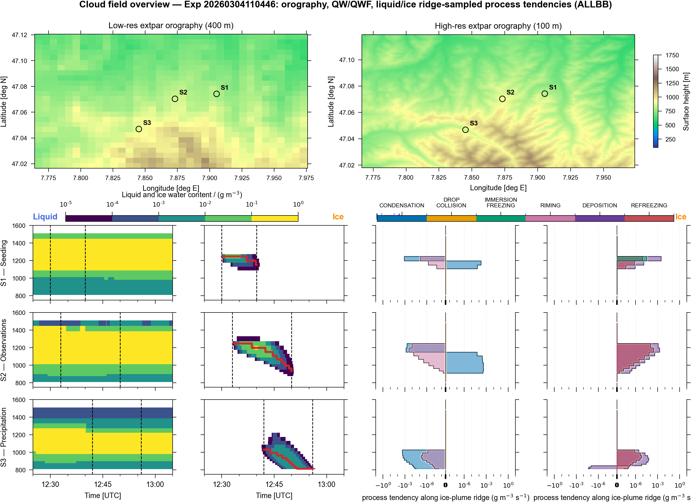
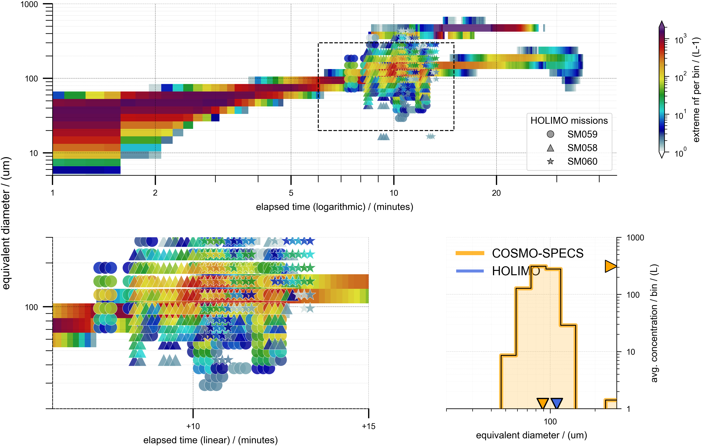
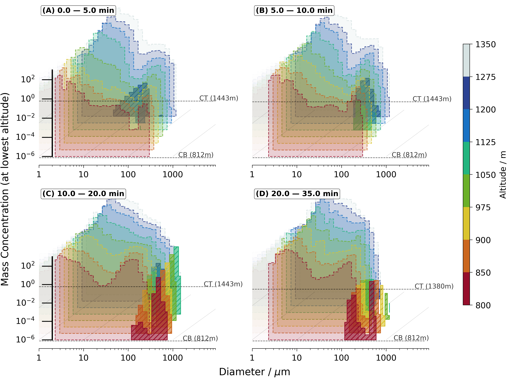
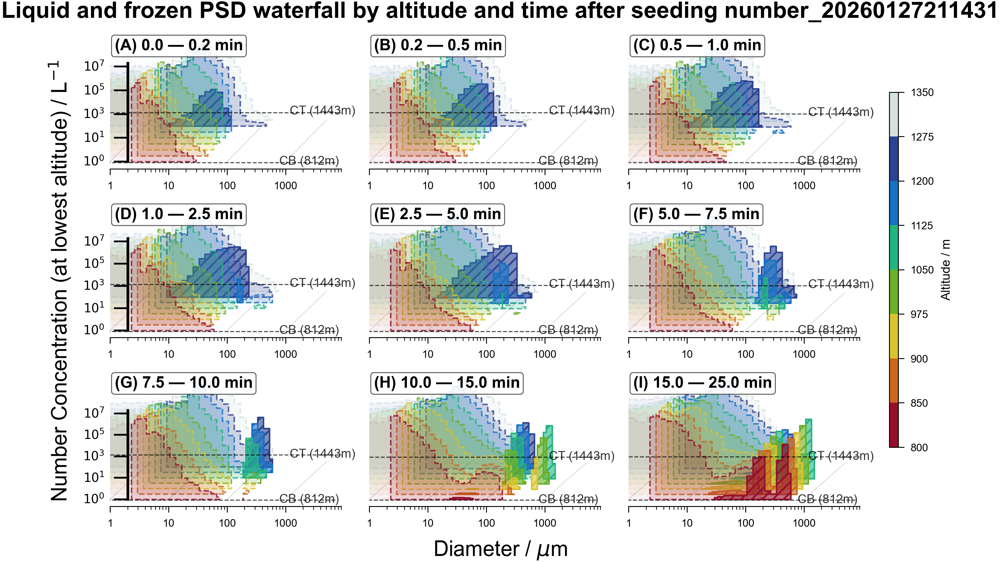

Live view of figures and videos from output/gallery. Enable GitHub Pages with Source: branch main, folder / (root) so assets are served, then this page works at your Pages URL.

Time–height mass concentration profiles (symlog) for all meteogram stations (ALLBB). Droplet and ice mass from COSMO-SPECS ensemble.

Ensemble-mean Lagrangian plume path. Trajectories from selected plume realisations with altitude and time; used for PAMTRA forward sampling.

PSD mass mixing ratio along the plume path as a function of altitude and time.

PSD number concentration along the plume path as a function of altitude and time.
Time evolution of droplet number size distribution at cs-eriswil, run 20260304, ALLBB.
Time evolution of droplet mass size distribution at cs-eriswil, run 20260304, ALLBB.